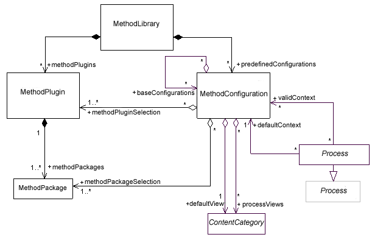

| Organizational Concepts |
 |
|
Relationships
Main Description
This section describes concepts that are only used to organize method content and processes in an authoring environment.None of these UMA abstractions are subject to publication. They include:
These abstractions as well as their relationships are presented with the the following UML 2.0 class diagram:
 |
© Copyright IBM Corp. 1987, 2005 All Rights Reserved |